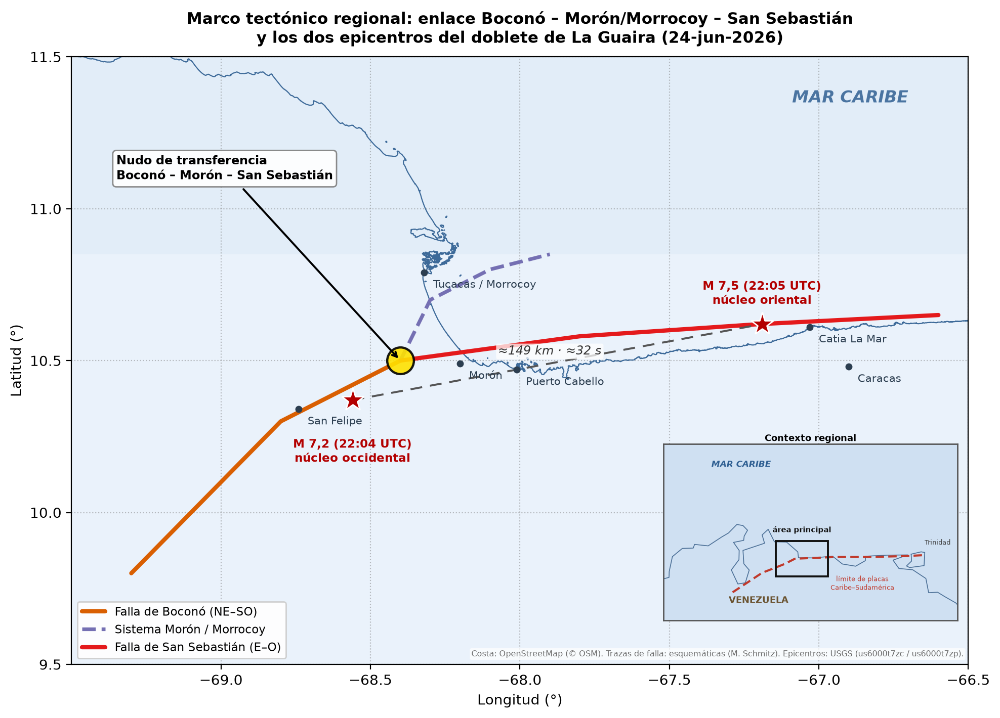
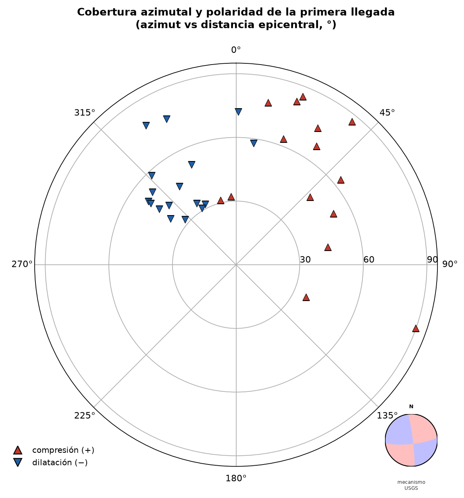
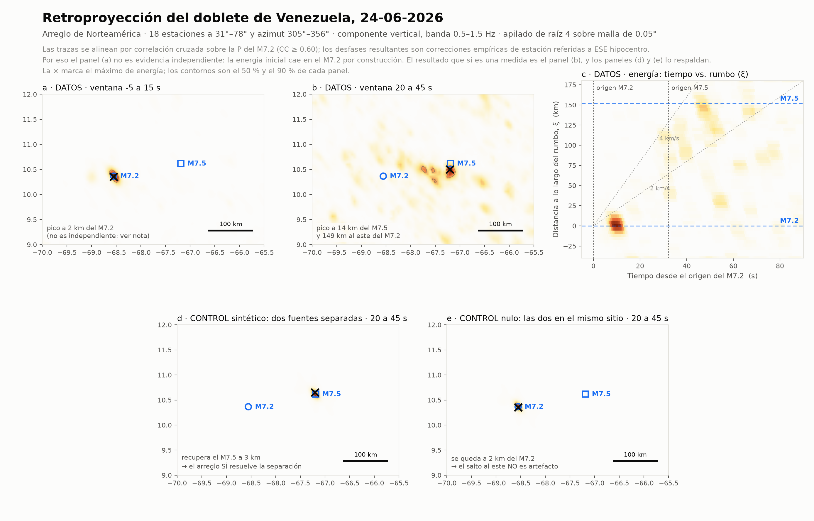

Método · retroproyección telesísmica — La Guaira, 24-jun-2026
Retroproyección: dónde y cuándo radía la ruptura
Un arreglo lejano de estaciones, usado como un telescopio sísmico: alineando y apilando sus registros se ilumina, en el mapa y en el tiempo, de dónde sale la energía de alta frecuencia.
La retroproyección (back-projection) no necesita un modelo de fuente: sigue la energía. Se toman decenas de estaciones telesísmicas, se alinean sus ondas $P$ y, para cada punto candidato del mapa, se apilan desplazadas por el tiempo de viaje predicho. Donde el apilado es coherente, hay una fuente radiando. Barriendo en el tiempo se obtiene una película de dónde se radia la alta frecuencia — y así se ven los dos núcleos del doblete y el hueco entre ellos.
1 El principio: alinear y apilar
Para un punto del mapa $\mathbf{x}$ y un instante $t$, el apilado de las $N$ estaciones es
donde $u_j$ es la traza filtrada de la estación $j$, $T_j(\mathbf{x})$ el tiempo de viaje $P$ predicho desde $\mathbf{x}$, y $\Delta\tau_j$ una corrección empírica por estación. Si $\mathbf{x}$ es la fuente real, todas las trazas se suman en fase y $S$ es grande; si no, se cancelan.
Para suprimir el ruido incoherente se usa el apilado de raíz enésima (aquí $n=4$), que castiga la falta de coherencia antes de sumar:
$E(\mathbf{x},t)$ es la imagen de energía: su máximo marca la posición de la fuente en cada instante.
Figura 1.Delay-and-stack. Las trazas llegan con la $P$ en instantes distintos (izq.); al desplazar cada una por el tiempo de viaje al punto candidato quedan alineadas (der.) y su suma es un pulso coherente. Barriendo el punto candidato por el mapa y el tiempo se construye la imagen de energía.
2 El contexto y el arreglo
El terremoto ocurrió en el sistema dextral Caribe–Sudamérica, en el enlace de las fallas de Boconó, Morón y San Sebastián:

Figura 2. Marco tectónico regional: el nudo de transferencia Boconó–Morón–San Sebastián y los dos epicentros del USGS (M 7,2 al oeste, M 7,5 al este), separados ~149 km. El recuadro sitúa la zona en el Caribe norte.
La retroproyección se hace con un arreglo telesísmico a 30°–90° de distancia. Lo decisivo es su cobertura azimutal: cuanto más rodean las estaciones al epicentro, mejor la resolución y menores los lóbulos laterales. Nuestro arreglo mira sobre todo desde el N–NE, lo que se corrige con las correcciones empíricas por estación:

Figura 3.Distribución azimutal de las estaciones (azimut frente a distancia epicentral), coloreadas por la polaridad observada de la $P$. El inserto proyecta esas polaridades sobre la esfera focal del mecanismo del USGS: coinciden en 28 de 32 estaciones — el mecanismo queda verificado con dato propio.
3 El modelo, sólo en relativo
Los tiempos de viaje $T_j(\mathbf{x})$ se calculan con un modelo de Tierra global (IASP91). A 1 Hz, un segundo de error es un ciclo entero y arruinaría el apilado; por eso el modelo no se usa en absoluto, sino en relativo: las trazas se alinean por correlación cruzada sobre la $P$ del M 7,2, y el desfase resultante en cada estación se guarda como corrección empírica $\Delta\tau_j$. Esa corrección absorbe la estructura 3-D bajo cada estación y la mayor parte del sesgo de trayecto. Se conservan las estaciones con $CC\ge 0{,}6$.
Consecuencia importante Como las correcciones se calibran sobre el M 7,2, la energía inicial cae sobre él por construcción: ese primer instante no es evidencia independiente. Lo que sí es una medida es la segunda fuente, que aparece 149 km al este y ~32 s después — y la respaldan los controles.
4 El resultado: el doblete

Figura 4. Imagen de retroproyección. (a) primeros 15 s: la energía cae sobre el epicentro occidental (circular por construcción); (b) 20–45 s: la fuente tardía aparece a 149 km al este; (c) energía en el plano tiempo–distancia a lo largo del rumbo (dos estallidos, no una rampa); (d) control con dos fuentes separadas y (e) control nulo con ambas en el mismo sitio, que confirman que el salto al este no es artefacto; (f)/geometría.
5 Resolución, controles y límites
Controles sintéticos: se generan dos fuentes separadas (se recuperan) y un control nulo con ambas colocadas (no aparece la segunda) → el salto al este es real, no un lóbulo lateral.
Jackknifeleave-one-out y prueba de ruido: la separación de 149 km es estable (σ ≈ 8 km) y sobrevive a SNR muy bajas; no depende de ninguna estación.
Qué ve y qué no: la retroproyección ilumina radiadores de alta frecuencia (inicios, paradas, bordes de asperezas), no el frente de deslizamiento. Acota la extensión de la radiación (≲35 km para el M 7,2), no la longitud total de ruptura. Resuelve bien posición y tiempo, no la amplitud absoluta (por eso el momento lo mide la inversión).
En una frase La retroproyección usa un arreglo lejano como telescopio: alineando y apilando la $P$ de alta frecuencia, mapea dónde y cuándo radía la ruptura — y muestra, con controles, que La Guaira vivió dos rupturas sucesivas separadas por un hueco, no un frente único.
6 Referencias
Ishii, M., Shearer, P. M., Houston, H., & Vidale, J. E. (2005). Extent, duration and speed of the 2004 Sumatra–Andaman earthquake imaged by the Hi-Net array. Nature, 435, 933–936.
Xu, Y., Koper, K. D., Sufri, O., Zhu, L., & Hutko, A. R. (2009). Rupture imaging of the Mw 7.9 12 May 2008 Wenchuan earthquake from back projection. G-cubed, 10, Q04006.
Kiser, E., & Ishii, M. (2017). Back-projection imaging of earthquakes. Annual Review of Earth and Planetary Sciences, 45, 271–299.
Kennett, B. L. N., & Engdahl, E. R. (1991). Traveltimes for global earthquake location and phase identification. Geophys. J. Int., 105, 429–465. (IASP91).